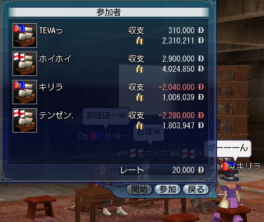

標記の通り、Win2000をスパッと削除し、WinXPを入れなおしました。
なんか6月末でサポートが切れるらしいので＿|￣|○
とりあえず、何より一番手間のかかるOSインスコ後のWinUPDTを省略する為に、
SP+メーカーでSP3統合済イメージを作り、サクッとHotfixを適用してやりましたともさ。ヘッヘ(･Θ･)
OSのインストールはいいんです。何も難しい事などない。
問題はその後だ。
各種ドライバのインストールに始まり、変なサービスやバルーン表示の停止、各種レジストリの適正値への調整。
それが済んだら次はVirus対策とかFireWallとか最低限のアプリのインスコに進んでその次にバックアップからの書き戻しをして
再起動、再起動、再起動、ぎゃーバックアップ壊れてた再起動、再起動、再起動さいきどうサイキドォォオオオァァァア！
あーもうめんどい！！
なんだチミは！？一体どういうつもりカネ！？
俺、何キャラよ！？
コホン(･ω･)
で、あー。Windowsは初期設定だとMTU値とRWIN値が異様に低いんですね。
なもんで、Youtubeとか開くと、10秒再生してはバッファ、また10秒再生してはバッファ、、とかなって
異様にストレスが溜まるのですわよ。
我が家のネット回線はCATVなので特にショーモナイ。
で、まあ色々計算してその数値もいじり倒すわけですよ。また再起動を繰り返して（
でも、全然速度が改善しない。
192kb/secってなんよｗｗそれってたったの１Mbpsじゃねーかｗｗｗ(語気を荒げて
と、まあそんな感じだったのですねん。
さーどうすんべぇって考えた。俺、ちょっと考えた。
で、思いついた。
「あ、Linuxマシンの方は速度ばっちりなんじゃん」って。
そうです。PlamoLinux環境だと、我が家での最高速度である980kb/secとか叩き出していたのでした。
ナンダヨー答えはすぐ近くにあったんじゃねーかよー って事で、早速調査。
ifconfig で表示されているMTU値は1500．
/proc/sys/net/core/rmem_defaultとrmem_max に記述されいた値(RWIN値)は 112640と131071.
ふむ。計算によると1だけ違うが(何 まあ妥当なとこだなーという事でネ。
そのままWinXPのレジストリに登録してやりました。
「オラ！これでどうだコンニャロー」って感じで。
再起動後、もう一度計測すると、、、
お見事。
ばっちりPlamoLinux環境での計測結果とニアイコールという結果になりました！
OK.おいたんはもう疲れた。でも満足した。
今夜はDOLをダウンロードしながら寝るます。これまた時間かかるんだ、、、
復活は近い！ウヒョー ヾ( ´;ﾟ ;ё;ﾟ ;)ﾉ
Plamoいいよ、Plamo。と、言いながら
最新のディストリビューションはどんなのになってるのかなーと思って
Debian5.0 Lennyと、Ubuntu9.10 を軽くインストールして試してみました。
うん、無理ｗ
もう使えないわー
彼らに一体何があったのか、すっかりゆとりOSになっていました。
そのくせ、設定ファイルとかはアチコチに分散して、ブラックボックス化が酷い。
ブートローダであるgrubも、grub2 になっていて、設定がイミフ
初期設定で個人ユーザーの登録はあるけど、rootユーザーの登録は無し。
基本は個人ユーザーからsudoでヤッテね☆ ってスタンスだった。
やり方はこう。
# passwd
いや、そりゃsudoでの運用は確かに悪くないだろうが、、
それだとGUIからroot権限必要な時にどうすりゃいいんだと。
そも、どっちが権限持ちのユーザーなんかわっかんない。
あー、Windowsみたいに皆がAdmin権限持ってる様なスタンスになっているのか。
デスクトップユースだから、別にこれでもいいのか。
ううむ。びっくりした。
開発環境の構築に、依存関係地獄に陥ったとしても、、、
システム全体の見通しがいいPlamo。
俺はこっちのがいいわー
JavaをONにしていないとまともに読めない。
ってゆーかレイアウトが崩れる。
フォームの入力だってやり直し。
画像もいちいち変なビューアーが起動して、重い。うざい。
Flashで全メニューを賄っているので、
ActiveXをONにしていないとページ全体が一切読めない。
動画をYoutubeとかからそのまま引っ張ってきているので
JavaとActiveXの両方をONにしないと見れない＝記事の内容が一切わからない。
→ ページ全体の読み込みが遅い。
わけわかんないCookieをいっぱい取得させようとする。
保存期間もとんでもなく長い。
しかもそのページで使えるのは無い
Blogサイドとかにわけわかんないパーツが付いていて、音が出る。
しかもそれがマウスカーソルの挙動を取得する様な奴で、
例えばカーソルをぶった切ってシャキーン(･ω´･)+ とか言いおる。
こんなサイトは死ねばいいと思う。ハゲが。
ソースからコンパイルしてインストールする場合、
ほとんどの場合、アンインストールって完全にできないそうです。
Makefileに"uninstall"の記述があれば、# make uninstall で消せる事もあるそうですが
それは、お行儀のよいソースに限るそうな。
ってかんなもん、素人の俺にわかるかっ!(ソース嫁) ってなるので
以下の応用でなんとか管理してみましょうってお話です。
通常どおり
$ ./configure
$ make
ってやった後、インストールする直前の時間を取得する為、
touch で更新基準ファイルを作成します。
$ touch ctime_base
で、インストール。
$ su
# make install
で、終わったらすぐにfind コマンドを使って、インストールされたファイルリストを取得します。
$ find /usr/local -cnewer ctime_base '!' -type d > file_list-xxx(好きな名前)
ソースからのインストールは、大体/usr/local 以下にインストールされるとの事なので、
上記コマンドで基準更新日以降にインストールされたファイルの一覧を取得する事が出来るのです。
こうしてリストを作っておけば、もう使わなくなった時とか、だめだ、使えない！（
なーんて時でも、以下のコマンドである程度綺麗に削除することが簡単に出来ますの！
# cat file_list-xxx | xargs rm -f
※ xargs コマンドで、ファイルリストの標準入力を、引数に変換しております。
仕上げに、locate でも実行してみて、余分なのが無いかチェックして完了ですｂ
でもさ！やっぱさ！人間だしさ！特に俺だしさ！
更新基準時間の更新を忘れる事もいっぱいあるわけですよ！
わーリスト作るの忘れてたーみたいな！
更新を忘れると、以前に作ったファイルリスト＋今回のファイルリストって感じで
二重に出力されてしまうので、中々よろしくない。
なもんで、touchのオプションをば駆使して、最終更新時間を書き換えてしまおう！って作戦。
まず、 $ ls -l で最終更新時間を確認しておいて、
以下のコマンドで更新時間を書き換える。
$ touch -t YYMMDDhhmm ctime_base
例えば、インストール完了したのが2010年5月22日 19:45だったならば、
単純に10分前とかに時間を変更すればいいわけですな。
それを実現するには以下のコマンド。
$ touch -t 1005221935 ctime_base
$ ls -l で確認すると、うまくいっているはず！
で、これで今回分だけのファイルリストが作れるはずなので、改めて上記コマンドを実行すればOK.
※これね。
$ find /usr/local -cnewer ctime_base '!' -type d > file_list-xxx(好きな名前)
アイデアひとつでどうにでもなっちゃうこの環境。
イイネッ！(・∀・)
どうせなら、普段使うブラウザも自分でコンパイルしたら素敵じゃない！？
って事で。
Firefoxのソースから自分の環境に合わせたバージョンをビルドしてみた。
コンパイルに8時間ぐらいかかってしまったが、、
うーむ、速い。軽い。気分がいい。
なんかEnglishバージョンになってしまったが、気にしないでおこう（
Nmapをconfigureした時、いきなりAAが表示されて吹いたｗ

今更AAを見たって驚きもしないけど、、、
くそっ油断した。
やたーヽ(´∀`)ﾉ
PlamoLinux環境に公開鍵認証でログインして、
そこでのXアプリケーションをWindows側に表示する事に成功ーヽ(´∀`)ﾉ
※ 黄色で囲った所がWindowsアプリケーションで、
赤色で囲った所がLinuxアプリケーションとなります。
(FirefoxとXMMSをば起動。で、右下にこっそりSCIM+Anthyが。)
これでノートPCの方は蓋閉じっぱなしで、いじって遊べるー ヽ( ´;ﾟ ;ё;ﾟ ;)ﾉ
接続に使用したソフトは、TeraTerm4.65
Xwindowは、Xming-6-9-0-18 と、Xming-fonts-6-9-0-6 を使用。
どうもこのバージョンまでしかWindows2000に対応していない様です。
サポートやめたんですかねぇｗ
ってか、わー
サポート期間は2010年6月30日までなんだと('A`)
来月やん。
と、言うわけで(何が
サブノートPCにPlamo Linuxをインストールしてみた。
(#ﾟдﾟ)¬⌒)д`）~'; ﾊﾟｧﾝｯ
何言ってるかわかんないですよね。
はい、ちゃんとニッポンゴ喋りますゴメンナサイ。
起承転結とかで。ゴメンナサイ。
【起】
あ、WindowsXP飽きた。
もうLinuxオンリーにしよっと って思いついた。
さて、何入れんべぇ
【承】
FedoraCore は嫌い。家庭ユースではうざい(何
ならば、世の常に習ってUbuntuか？
とも思ったんですけど、近頃はシステム全体が重たすぎて使用に耐えない。
すわ、原点回帰のDebianか？
Debianはとても安定したシステムだけど、お世辞にも日本語環境が完成されているとは言えない。
ってか、同じようにインストールしているはずなのに、何故か、微妙に、どこかが同じにならない。
Gentoo は、、、無理ｗ
【転】
上記Debian系の強みである、apt-get はとても魅力的だけども
なんとなく、あれこれインストールして「ワー動いたー」ってのもなんか飽きた。
それに、いじりがいが無い。
んー、やっぱ、欲しいソフトはソースからビルドしてこそ面白いんじゃねの！？
あ！どうせなら日本人が開発/メンテナンスしているディストリビューションがいいな！
【結】
と、いうわけの、Plamo Linux なのでした(・ω・)
うむ。面白そうだ。
これが本当に起承転結になっているのかどうかは置いておいて(
昨日は大航海のプレイチケット期限で、
12時ジャストに強制切断されてしましましたｗ
で、なんとなくパスワードを見直してみたら、、、
まーずさんなのにしてましたよｗ
というわけで、以下のツールを使って一括管理する事にしました。
・ID Manager ver.7.8
ID Managerにも一応パスワード自動生成機能があるんですが、なんとなく安心出来ない。
ならば、以下のツールでマウスぐりぐりして、本当の乱数パスワード生成だー
・Password Creator TypeB
うむ、これなら自分にさえ覚えられない様なパスワードが作れる。
俺はマスターパスワードさえ覚えておけばいいわけで。
※ クリックで拡大
うむ、ナイスだ。
タイトルは俺が勝手に付けたボスさんの称号なんですが、本人もお気に入りの様で嬉しいです。
先日はロンドンにて大暴れ！
打倒！ホイさん！うらー って事で
俺、ボスさん、そそのん、キリラさんチーム VS ホイさん( `・ω・)
シャーコラー！
- 30秒後 -
が、頑張れそそのん！(/_;)
えー、今日もホイさんは強かったです＿|￣|○
で、酒場で飲みすぎて大暴れのキリラさん。
そそのんと、ボスさんの慌てっぷりがよく分かる構図です。
で、名誉会長として皆を優しく介抱するボスザルさん。
なんか困った事があったら、頼れるアニキ、ボスザルさんへ今スグお電話を！
※ ただし幼女に限る
先日、リスでぼーっとしていたら、突然決闘の申し込みが。
とりあえず受ける俺（
すると相手はキリラさんでした。
なんの負けるかー！と挑戦を受け、以下の様な激しい戦いが繰り広げられました。
結果、世界の幼女擁護組合名誉会長であるボスザルさんの制止を振り切り、無事勝利しました。
で、五月人形を得てアパートに飾りに行くというので、キリラさんちにお邪魔させてもらう事にしました。
ほー中々精巧な作りですね。
一応、真ん中のちっこいのがソレです。
決して一番左のんではありません。
で。
続々とマリアさん、テンさん、けんちきさん、ホイさんが集まり、突然始まったポーカー大会！
※ クリックで拡大します。
むう、、これは負けてられないな、、、
なんのカードを切るべきか、、、俺の脳内で動物達が会議を始める、、、
「どーしよークマ、、、あ、このハチミツ美味しいクマ」
「このニンジンもいけるウサ。キツネさんにもあげるウサ」
「わーありがとうコン！じゃあ代わりに油揚げあげるコン！」
「わー、楽しそうだね。ボクも混ぜてよポン」
『去れや、この腐れ狸がっ！』
「！？」
よし！ロイヤルじゃないフラッシュでもないストレート！
倍プッシュだ！(マジでこれが出た。
3時間程熱闘を繰り広げた結果、以下の様な結果になりました。

SS無いけど、途中で寝ちゃったマリアさんは、最後に俺からぶん取り、-10万ぐらいだったかな？ｗ
そしてホイさんの勝ち分が半端ねぇｗ
やー楽しかった。
また誰かのお家に行って場を開きたいですね！
※ テンさんは総資産の55%程失ったそうです（
ただいまー
やー楽しかった。
距離としては500km未満ですげー短いんだけど、中々濃い旅でした。
今回は福井県の敦賀ってとこに行ったのですが。
まー名物の無い街ですわｗ
人が少なくて良いｗ
シーズンは夏だな。海水浴客まっしぐら！(何
気比の松原にテント設営して、サフラン湯ってゆー銭湯に行って、、、
その銭湯で千葉から鈍行電車で旅をしてきたってゆー青年と話し込んだりして。
夜は親父と酒飲んでウッヒャッヒャ
うむ。俺はバイクが好きだ。
さあー今年も行くぞーツーリング！
日本海側へ琵琶湖周辺からGoですよ
今回は一泊だけですが、雨は降らない様なので安心度高し！！
さー今日も元気に行ってみよー
|ω･)ﾉ んじゃば。行って来ます。